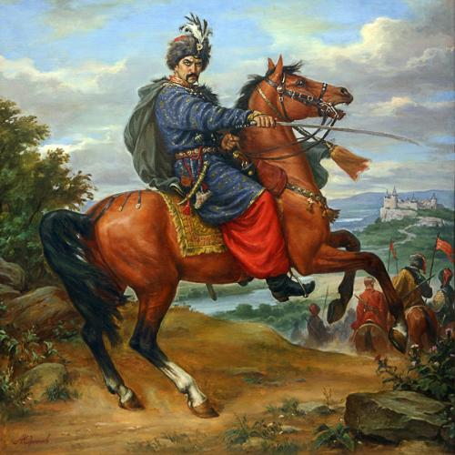
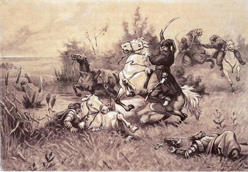

У середині XVI ст. була створена Запорізька Січ. З XVII ст. починається заселення цих земель козаками. 1734 року було створено Перевізьку паланку, у переліку приналежних їй сіл і зимівників згаданий і Кривий Ріг. 1771 року в Кривому Розі розташовується Ставка Коша Запорізької Січі. Залишки фортифікаційних споруд знаходилися при кургані Царева Могила (до нашого часу не збереглися). 1774 року академік Гюльденштедт відвідав район Кривого Рогу і зробив його перший науковий опис. Він згадує про розробки чорно-слюдистого сланцю в районі злиття річок Інгулець і Саксагань. Після завершення у 1774 році російсько-турецької війни російська влада відкрила новий поштовий тракт, що сполучив Кременчук із Кінбурном і Очаковом, де розташовувалися російські війська. Саме 8 травня (27 квітня за старим стилем) 1775 року в «Розписі заснованих поштових станцій по річці Інгулець від Кременчука до Херсона» з'являється перша офіційна письмова згадка про Кривий Ріг. Місце для майбутньої поштової станції затвердив останній кошовий отаман Запорозької Січі Петро Калнишевський. За його наказом службу на станції розпочали козацький писар Феодосій Кудлик і п'ятеро підзвітних йому козаків. Після ліквідації Запорозької Січі царський уряд почав роздавати ці землі у власність військовим, козацькій старшині, поміщикам і колоністам. Наприкінці XVIII століття поміщиця Диконська переселила на виділені їй землі 30 селянських сімей із Пензенської губернії. Їхні поселення називали Диконкою і Катеринівкою, тепер це територія рудника імені Кірова. 1808 року виникло село Інгулець, а 1818 — село Олександрів Дар, засноване генералом Рахмановим, який на землі, отриманій у подарунок від Олександра І, поселив кріпаків із Чернігівщини.
